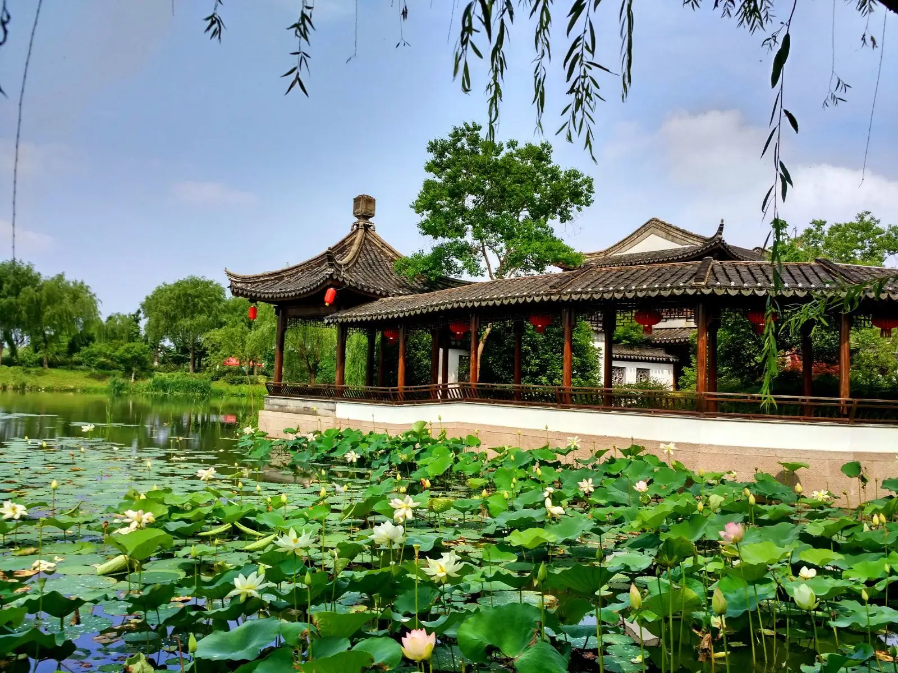
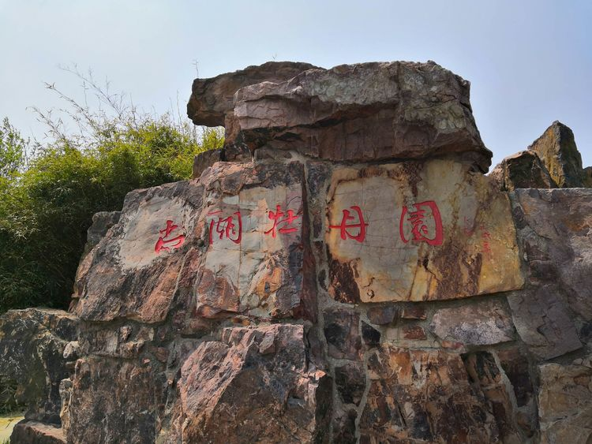

尚湖
尚湖简介/概述
尚湖因商末姜尚（姜子牙）在此隐居垂钓而得名，是国家AAAAA级旅游景区、国家首批城市湿地公园、中国十大魅力之最佳生态休闲湖泊。主体水面800公顷，烟波浩渺，水质清澈，与十里虞山交相辉映，形成一幅自然山水画。湖内湿地遍布，荷香洲、钓鱼渚、鸣禽洲、桃花岛等七个洲岛镶嵌其中，呈岛中有湖、湖中有岛的独特景观。岛上树木苍翠，鸥鹭翔飞，风景怡人，设有太公岛、拂水山庄、船模馆、江南牡丹馆等一批人文景观和欢乐岛、水上游船等游乐项目。景区四季活动丰富，其中春季的牡丹花已成为江南地区最有品牌影响力的旅游节庆活动之一。
常熟尚湖，尚湖有着2亿年的地质史，于1986年开发为尚湖风景区。相传因殷末姜尚避纣王暴政，隐居于此垂钓而得名。尚湖北依十里虞山，东邻古城常熟，山清水秀，与古城浑然一体，是国家级太湖风景区的重要景点。尚湖与虞山相映，十里青山半入城，万亩碧波涌西门，为古城平添了千种风情，一向为江南著名的风景旅游胜地。
经过多年的严格保护和科学利用，尚湖湾已经成为集生态、科普、旅游休闲于一体的城市湿地景区，对维持区域生态平衡、营造优美人居环境产生了巨大效益，并以独特的自然和人文景观成为江南旅游度假基地。
景点景观
太公岛是虞山尚湖旅游度假区2010年向游客奉上的一道文化大餐。太公岛集中展示姜尚文化的景观区，分四个区域：一区设“太公阁”，用以展示姜尚与常熟尚湖相关的典籍史料；二区选取“太公家训”中的相关格言，镌刻成碑，以示游人；三区将建设“钓鱼台”、“子牙亭”和“八卦戏水池”，全面展现太公当年的生活场景；四区为观景游览活动和休憩区。通过这种人文与生态交融、历史与时代荟萃、视听与参与性结合的多种艺术表现形式，充分展示姜尚文化的丰富内涵。
荷香洲 荷香洲因洲内诸池遍植荷花、夏季荷香四溢而得名，是观山湖胜景之绝佳处。洲内绿树成荫，胜景处处：有相传黄公望在此饮酒作画的湖桥串月，有品茶赏荷的流香馆、四景园，百鸟云集的水上森林，更有精品荟萃、名闻江南的中华牡丹园。徜徉其间，自然之美尽在眼底。
 尚湖牡丹园尚湖拥有中华牡丹园、国际牡丹园、百年牡丹园等牡丹文化精品展示区，拥有9大色系300多个品种50000多株的牡丹，规模品种均为江南之最。“江南看牡丹，相约常熟来”，每年春季举办的牡丹花会盛况空前，远近闻名。近年来，景区与中国牡丹传统产地洛阳、菏泽、彭州联手成功打造了“中国牡丹行”这一国字号旅游品牌。
景区导览图
路线推荐
一．尚湖风景区路—入园游游太公岛,寻姜太公遗踪（参观八卦游廊 、八卦戏水池、 祈福台、 太公文化馆 。）二．走路漫步尚湖菏泽牡丹园、洛阳菏泽牡丹园，（杨柳屿岛上配有换乘中心（电瓶车、摇橹船）三．游览拂水山庄（钱谦益和柳如是私家园林）回味钱谦益柳如是白发红颜传奇爱情故事（内有秋水阁、梅圃溪堂、藕耕堂、花信楼、钱柳纪念馆等拂水八景）四．尚湖欢乐岛 （大型游乐区让年轻人在游戏中放松心情）五．观尚湖水上森林 （ 踏上木栈道观赏水杉奇景。），六．游尚湖湖面 坐画舫游览尚湖万亩水面 在山水间领略自然气息，七．游览尚湖水街品尚湖美食。